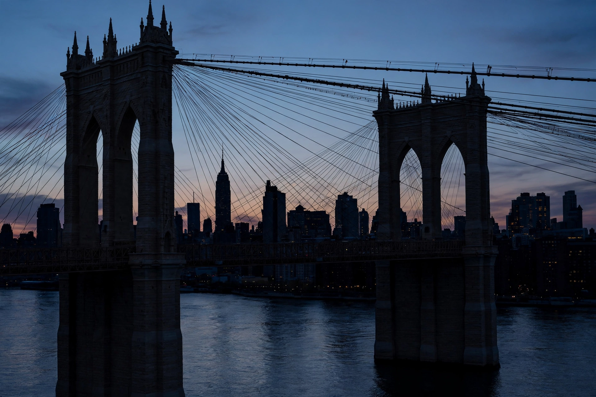

Brooklyn Bridge

| Carries | Vehicles, pedestrians, bicycles |
|---|---|
| Crosses | East River |
| Locale | New York City (Manhattan–Brooklyn) |
| Designer | John Augustus Roebling |
| Total length | 1,825 m (5,989 ft) |
| Longest span | 486.3 m (1,595.5 ft) |
| Construction start | 1870 |
| Opened | May 24, 1883 |
The Brooklyn Bridge is a hybrid cable-stayed/suspension bridge in New York City, spanning the East River between the boroughs of Manhattan and Brooklyn. Opened on May 24, 1883, it was the first fixed crossing of the East River and, at the time of its opening, the longest suspension bridge in the world, with a main span of 486.3 metres (1,595.5 ft). It was also the first suspension bridge to use steel wire in its cable construction.
History
The bridge was designed by German immigrant engineer John Augustus Roebling, who had earlier designed smaller suspension bridges in Cincinnati and elsewhere. Roebling died in 1869 from a tetanus infection following an accident at the site, and his son Washington Roebling took over as chief engineer. Washington was himself stricken by decompression sickness ("the bends") while working in the pressurised caissons used to dig the tower foundations, and he directed much of the later construction from his apartment in Brooklyn Heights, with his wife Emily Warren Roebling acting as his on-site intermediary.
Construction began in 1870 and took thirteen years. At least 20 workers died during the project, many from caisson disease. When the bridge opened, President Chester A. Arthur and New York Governor Grover Cleveland attended the ceremony. A week after opening, a rumour that the bridge was collapsing caused a stampede that killed 12 people.
Design
The bridge's two masonry towers are built of limestone, granite and Rosendale cement in a neo-Gothic style, with pointed arches through which the roadway passes. The main cables were spun from steel wire on site. The deck originally carried elevated railway tracks, streetcars, horse-drawn vehicles and an elevated pedestrian walkway; today it carries six lanes of automobile traffic, with a separate walkway for pedestrians and cyclists above.
Legacy
The Brooklyn Bridge was designated a National Historic Landmark in 1964 and a National Historic Civil Engineering Landmark in 1972. It remains one of the most recognisable symbols of New York City and a celebrated feat of 19th-century engineering.
See also: Suspension bridge, Golden Gate Bridge.